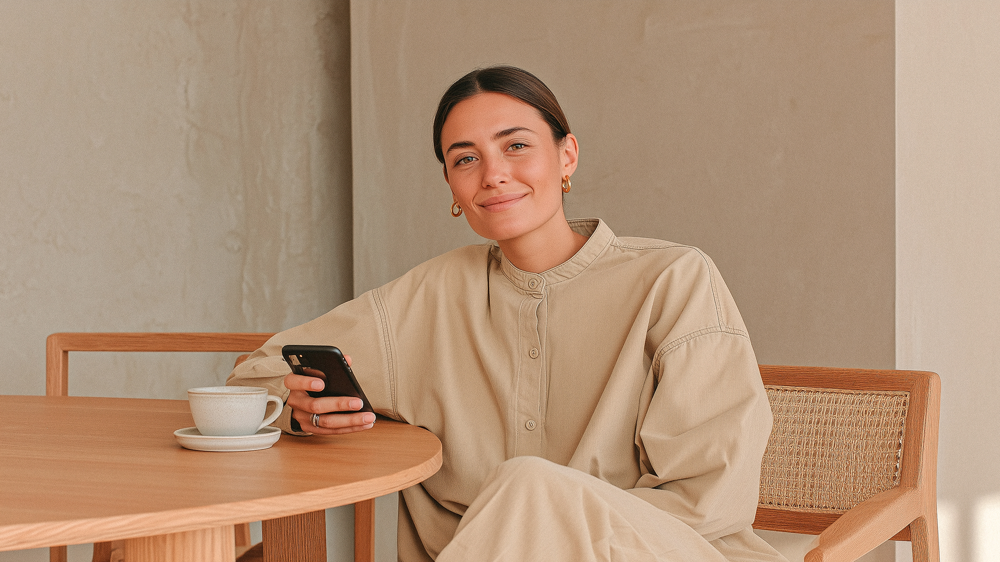

Fintech
para negócios

Empreender é avançar diante do incerto.
E é justamente por isso que a confiança precisa estar no centro de tudo.
A ATF integra fundos, crédito e infraestrutura financeira digital para empresas que precisam crescer com critério, governança e previsibilidade.
Use ← / → para navegar